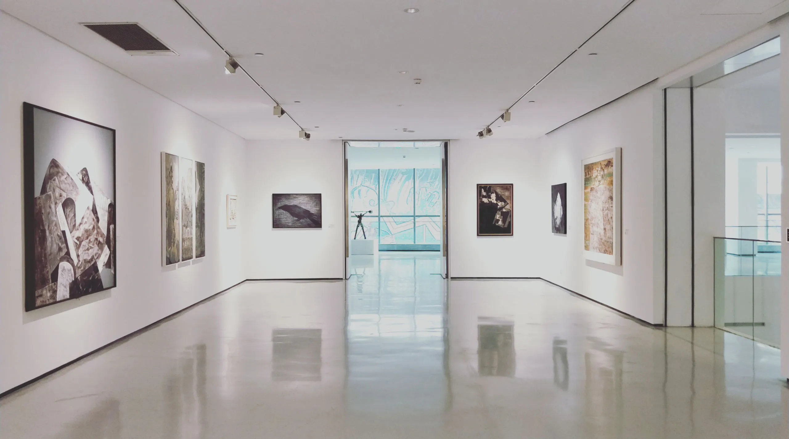
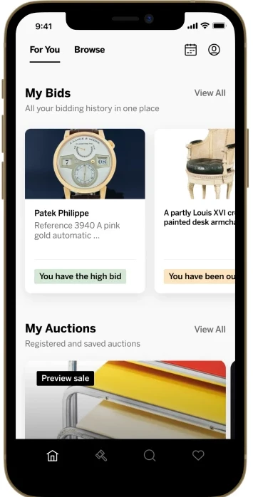
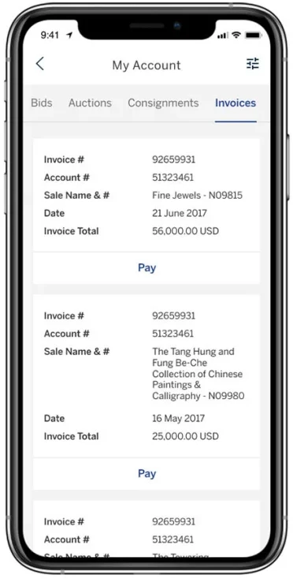
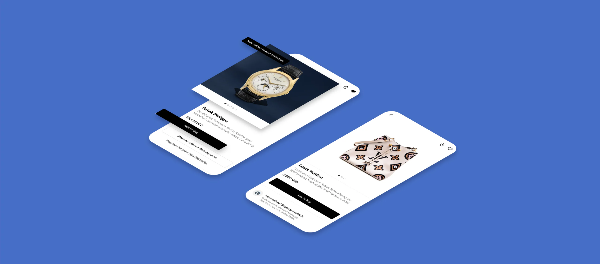
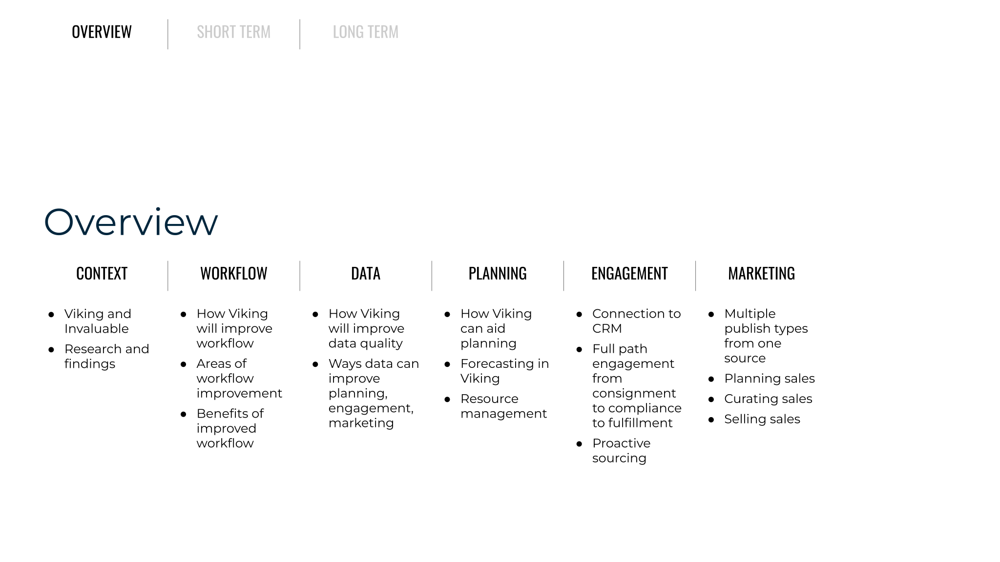
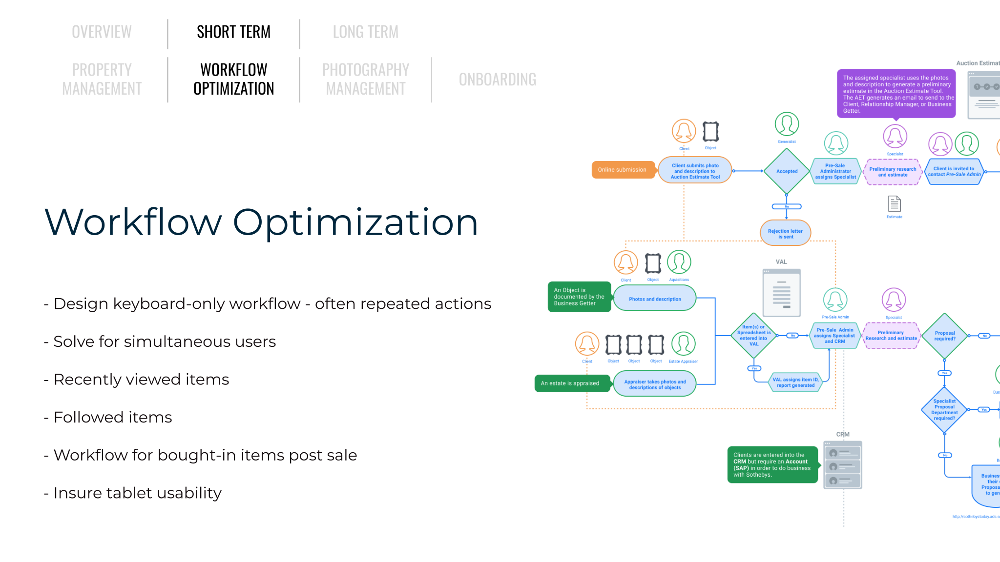
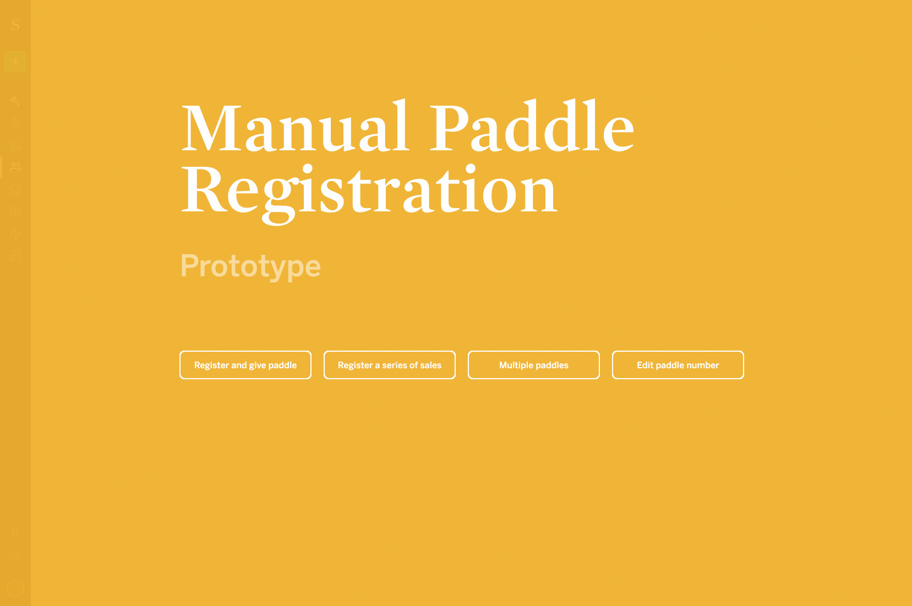

Transforming the World's Oldest Auction House
As part of their digital transformation, I led UX designers and collaborated with multiple product owners on a far-reaching series of initiatives. My team brought together client-facing, online auctions with point-of-sale and administrative interfaces in a unified design system.

Context
Research included observation, design-thinking workshops, and interviews. I implemented major feature improvements to the client facing web and mobile apps, as well as the backend interface and workflow, while working in a heavily regulated industry.






Service Design + Mobile
Research included observation, design-thinking workshops, and interviews. I implemented major feature improvements to the client facing web and mobile apps, as well as the backend interface and workflow, while working in a heavily regulated industry.

Design Research
Preliminary research for an administrative dashboard uncovered a major problem. No one understood the breadth of complexity of the business process at Sotheby's. I created a diagram to confirm my understanding and printed it out on a plotter. I hung it in a public
location with instructions for viewers to contribute. Within a few days, I created a final diagram that was used throughout the organization.

Administrative Interface
As a team, we created a detailed plan for the digital future of the Sotheby's organization. I was responsible for the user experience of the Viking administration dashboard. A piece of
software that touched every part of the business process at Sotheby's.



Each initiative required extensive research, testing, and presentation to a variety of stakeholders. I created visualizations in order to ensure the viability of the features I was executing.

Prototypes were created in Figma using a shared design library. These were used for testing, final presentation, delivery to the development team, and employee training.
